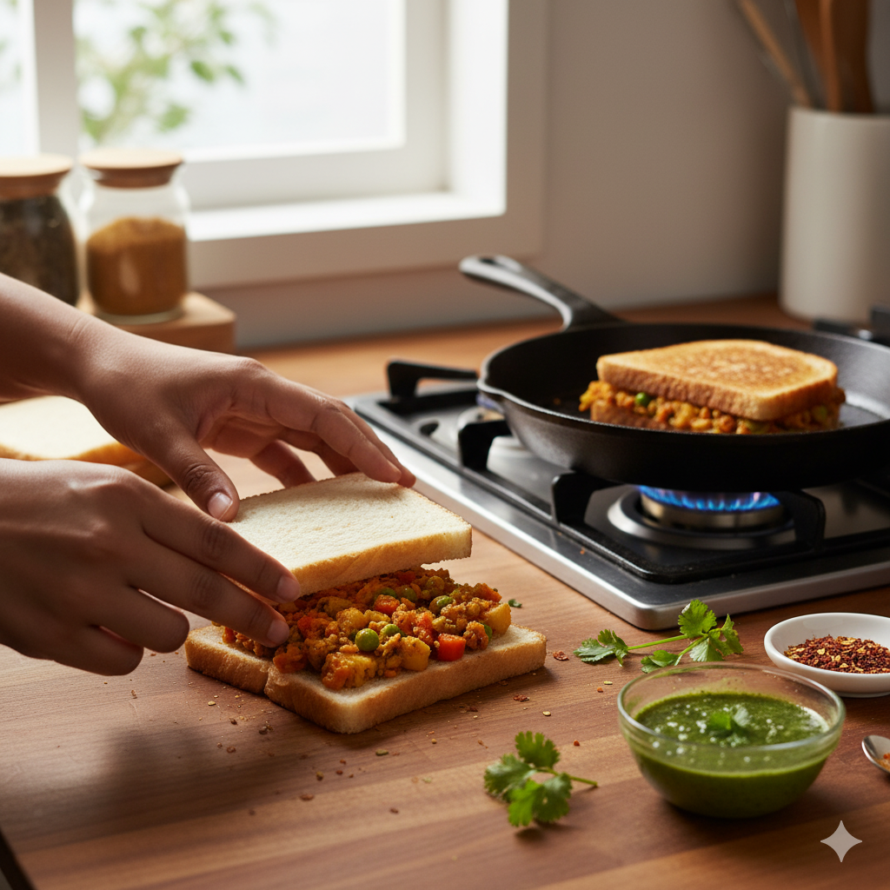

Leftover Sabzi → Masala Sandwich
- Leftover sabzi – 1 cup (any vegetable curry)
- Bread slices – 4
- Butter – 1 tbsp
- Green chutney / tomato ketchup – 1 tsp each
- Cheese slice – 1-2 (optional)
- Salt & pepper – to taste
- Spread butter on bread slices.
- Spread green chutney / ketchup on top.
- Place leftover sabzi evenly on one slice.
- Add cheese slice if using.
- Cover with another bread slice to make a sandwich.
- Grill on a pan/tawa or sandwich maker until golden brown.
- Serve hot with ketchup or chutney.
Tips:
- Use thick or mashed sabzi to prevent bread from getting soggy.
- Add finely chopped onions or coriander for extra flavor.
- Toast lightly for a crispy sandwich.

Delicious Masala Sandwich made from leftover sabzi!